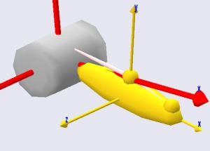
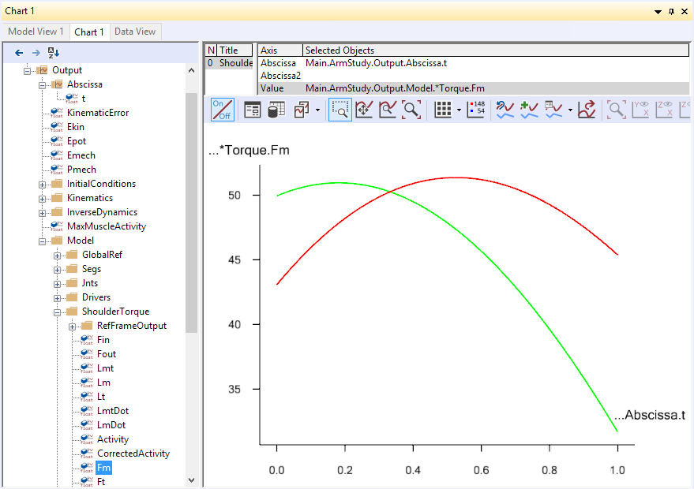
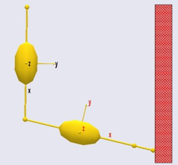
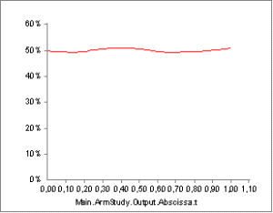
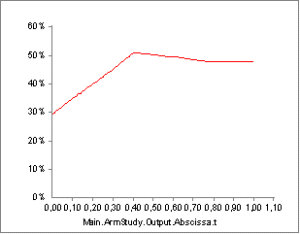
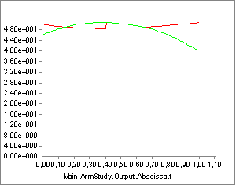
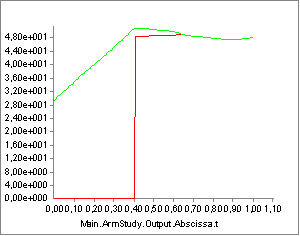

Lesson 6: General Muscles#
Physiological muscles are truly amazing machines, and despite many attempts it has not been possible to make technical actuators that are as light and efficient as natural muscles. As you may have seen in the preceding sections, the mathematical modeling of muscles is not an easy task either. But once it has been done, we can use some of the properties of muscles to our advantage. We would like these “muscles” to be able to have a slightly more general formulation than physiological muscles, which are confined to acting along strings.
The solution is the AnyGeneralMuscle class. This type of muscle is capable of acting on Kinematic Measures. Kinematic Measures is an abstract class representing anything you can measure on a model, and there is in fact an entire tutorial lesson devoted to the subject in the section on The Mechanical Elements. Some examples are:
A general muscle working on a distance measure between two points becomes simply a linear force provider, or in fact a reaction provider in the sense that the force is not predetermined but will become whatever equilibrium requires.
A general muscle working on an angular measure, for instance a joint angle, becomes a torque provider.
A general muscle working on a Center of Mass measure becomes an abstract force working on all segments of the body contributing to the center of mass.
This lesson demonstrates how general muscles can be used for a variety of modeling tasks.
Muscles as joint torque providers#
One of the purposes of the AnyBody Modeling System is to be able to model the musculoskeletal system to a realistic level of detail. However, there is a place in the world for traditional inverse dynamics, where the muscles are disregarded and the body is balanced entirely by joint torques. This type of analysis can provide important information about the function of limbs and joints, and it is extremely numerically efficient.
Joint torque inverse dynamics can be accomplished by adding general muscles to the joints to replace the physiological muscles of the body. This way, the “muscle forces” computed in the general muscles will simply be the joint torques.
The example from the preceding lessons is not well suited to play with joint
torques, so please download a new example to start on.
This is in fact a simplified version of the simple
arm example from the Getting Started with AnyScript tutorial, where the
muscles have been removed. The model has two segments, an upper arm and a
forearm, and is attached to the global reference frame at the shoulder. It has a
100 N vertical load acting downwards at the hand.

The lack of muscles means that the model cannot currently do an inverse dynamics analysis. If you try to run the InverseDynamics operation, you will get the following error message:
NOTICE(OBJ1): MuscleDemo.6.any(103): ArmStudy.InverseDynamics: No muscles in the model.
ERROR(OBJ1): MuscleDemo.6.any(103): ArmStudy.InverseDynamics: No solution found: There are fewer unknown forces (muscles and reactions) than dynamic equations.
which is a mathematical way of stating that the model cannot be balanced in the absence of muscles. In this case we are not going to add real muscles. Instead we shall add general muscles to the revolute joints. The best way to introduce a general muscle is to insert it from the class tree. Place the cursor after the Drivers folder, locate the AnyGeneralMuscle in the class tree, and insert a template:
AnyFolder Drivers = {
//---------------------------------
AnyKinEqSimpleDriver ShoulderMotion = {
AnyRevoluteJoint &Jnt = ..Jnts.Shoulder;
DriverPos = {-1.7};
DriverVel = {0.4};
Reaction.Type = {0};
}; // Shoulder driver
//---------------------------------
AnyKinEqSimpleDriver ElbowMotion = {
AnyRevoluteJoint &Jnt = ..Jnts.Elbow;
DriverPos = {1.5};
DriverVel = {0.7};
Reaction.Type = {0};
}; // Elbow driver
}; // Driver folder
AnyGeneralMuscle <ObjectName> = {
//ForceDirection = -1;
AnyKinMeasure &<Insert name0> = <Insert object reference (or full object definition)>;
AnyMuscleModel &<Insert name0> = <Insert object reference (or full object definition)>;
};
Just as normal muscles, general muscles must be associated with a muscle model. Let us insert a simple one:
AnyMuscleModel <ObjectName> = {
F0 = 0;
//Lf0 = 0;
//Vol0 = 0;
};
AnyGeneralMuscle <ObjectName> = {
//ForceDirection = -1.000000;
AnyKinMeasure &<Insert name0> = <Insert object reference (or full object definition)>;
AnyMuscleModel &<Insert name0> = <Insert object reference (or full object definition)>;
};
The empty fields in the muscle model must be filled in:
AnyMuscleModel MusModel = {
F0 = 100.0;
};
Note that the simple muscle model class has the optional memebers (parameters) of Lf0 and Vol0 that are usually left out for use with AnyGeneralMuscle.
We shall associate the muscle with the shoulder joint:
AnyMuscleModel MusModel = {
F0 = 100.0;
};
AnyGeneralMuscle ShoulderTorque = {
//ForceDirection = -1;
AnyKinMeasure &Angle = .Jnts.Shoulder;
AnyMuscleModel &Model = .MusModel;
};
Providing a torque for the shoulder is not enough. We also need a torque in the elbow:
AnyGeneralMuscle ShoulderTorque = {
//ForceDirection = -1;
AnyKinMeasure &Angle = .Jnts.Shoulder;
AnyMuscleModel &Model = .MusModel;
};
AnyGeneralMuscle ElbowTorque = {
//ForceDirection = -1;
AnyKinMeasure &Angle = .Jnts.Elbow;
AnyMuscleModel &Model = .MusModel;
};
Having provided torques for the shoulder and elbow it should be possible to run the inverse dynamic analysis. However, attempting to do so will provide the same depressing error message as before. The reason is that general muscles share the ability to be unilateral with normal muscles. The direction of action is controlled by the variable ForceDirection. If the muscle acts in the positive direction of the joint angle, then it direction should be set = 1, and if it is in the negative joint angle direction it should be -1. In the present case the external load tends to work in the negative angle direction for the shoulder as well as the elbow, and hence the muscles should counteract in the positive direction:
AnyGeneralMuscle ShoulderTorque = {
ForceDirection = 1;
AnyKinMeasure &Angle = .Jnts.Shoulder;
AnyMuscleModel &Model = .MusModel;
};
AnyGeneralMuscle ElbowTorque = {
ForceDirection = 1;
AnyKinMeasure &Angle = .Jnts.Elbow;
AnyMuscleModel &Model = .MusModel;
};
Now the InverseDynamics operation can be run. Having done so, we can open a new Chart View and look up the two joint torques as the Fm property of the general muscles. We can plot both of them simultaneously using an asterix as shown below:

Notice that in this case we have used the same strength (muscle model) for both joints. However, the maximum joint torque in physiological joints varies a lot. The knee extension strength, for instance is significantly larger than the elbow extension strength. If you perform this type of modeling you can define joint torque muscles with strengths comparable to the available joint torque and the system can give you an estimate of how many percent of each joint’s strength is used in a given situation. You can also define different strengths of extension and flexion muscles in a given joint and thereby take for instance the difference in strength in the knee in these two directions into account.
Important Remark: Another useful property of the general muscles used as joint torque
providers is that you can handle closed loops and other statically
indeterminate situations, which are not treatable by traditional inverse
dynamics because the equilibrium equations do not have a unique
solution. The muscle recruitment algorithm will then distribute the load
between joints according to their individual strengths, and it is
therefore important to have reasonable estimates of joint strengths for
this type of situation.
Contact and other boundary conditions#
One of the characteristics of muscles is that they are unilateral, i.e. they can only exert force in one direction. Mathematically this behavior creates a significant amount of problems, but many mechanical phenomena have the same characteristics, namely any kind of contact phenomenon. Biomechanics is full of contact problems:
The contact between a foot and the floor
The contact between the upper thighs and the seat of a chair
The contact between two articulating surfaces in a joint.
There is another less appreciated similarity between muscle forces and contact forces: neither is without limit. Muscle forces are obviously limited by the strength of the muscle. Contact forces to the environment may seem like they are only limited by the strength of whatever is supporting the body, but it can also be limited by friction and by the pressure on the contacting tissues; if you have a stone in one shoe you will very likely put less weight on that foot than on the other.
So the muscles of the body in addition to creating equilibrium are constrained by the available contact forces to the environment, and these often have different limits in different directions, typically a high limit in compression perpendicularly against the supporting surface, a smaller limit for friction tangentially to the surface, and no reaction available in tension. Mathematically and mechanically this is very much how muscles work, and the conditions therefore affect the mechanics of the entire system much like muscles do and can be mimicked by means of general muscles.

We are going to make a couple of changes to the simple arm model to investigate contact in more detail. We shall imagine that the hand of the model has a vertical wall to support against. We have to change the kinematics to make the arm slide along the wall. It would be really difficult to figure out which joint angle variations are needed to make the hand move vertically, so we drive the hand directly instead.
AnyFolder Jnts = {
//---------------------------------
AnyRevoluteJoint Shoulder = {
Axis = z;
AnyRefNode &GroundNode = ..GlobalRef.Shoulder;
AnyRefNode &UpperArmNode = ..Segs.UpperArm.ShoulderNode;
}; // Shoulder joint
AnyRevoluteJoint Elbow = {
Axis = z;
AnyRefNode &UpperArmNode = ..Segs.UpperArm.ElbowNode;
AnyRefNode &LowerArmNode = ..Segs.LowerArm.ElbowNode;
}; // Elbow joint
}; // Jnts folder
AnyKinLinear HandPos = {
AnyRefFrame &ref1 = .GlobalRef.Shoulder;
AnyRefFrame &ref2 = .Segs.LowerArm.PalmNode;
};
AnyFolder Drivers = {
AnyKinEqSimpleDriver HandDriver = {
AnyKinLinear &Measure = ..HandPos;
MeasureOrganizer = {0,1};
DriverPos = {0.45, -0.6};
DriverVel = {0, 0.5};
Reaction.Type = {0, 0};
};
/*
//---------------------------------
AnyKinEqSimpleDriver ShoulderMotion = {
AnyRevoluteJoint &Jnt = ..Jnts.Shoulder;
DriverPos = {-1.7};
DriverVel = {0.4};
Reaction.Type = {0};
}; // Shoulder driver
//---------------------------------
AnyKinEqSimpleDriver ElbowMotion = {
AnyRevoluteJoint &Jnt = ..Jnts.Elbow;
DriverPos = {1.5};
DriverVel = {0.7};
Reaction.Type = {0};
}; // Elbow driver
*/
}; // Driver folder
Notice that the previous two joint angle drivers have been disabled. Otherwise the system would become kinematically over-determinate. Notice also that the new driver drives two degrees of freedom corresponding exactly to the two drivers we have disabled. Finally, please notice the line
Reaction.Type = {0, 0};
which means that the wall presently provides no reaction forces to the arm. Plotting the MaxMuscleActivity provides the following result:

The muscle activity is rather constant which is the natural consequence of the moment arms being rather constant. The gravity as well as the applied load of 100 N are vertical, so one might be tempted to think that a horizontal support would not make much of a difference. We can do a quick test by simply switching on the horizontal support of the driver:
Reaction.Type = {1, 0};
This produces immediate proof that mechanics is usually more complicated than expected; even this very simple mechanical system behaves differently from what we might expect:

Notice that the muscle activity is much smaller in the beginning of the movement with the reaction switched on and much the same towards the end of the movement. It seems like the muscles are able to use the horizontal reaction force to their advantage depending on the posture of the mechanism.
Walls in general do not work like that; they can only provide reaction pressure but no tension. This we can mimic with general a muscle. We first switch the reaction off again:
Reaction.Type = {0, 0};
Subsequently we define a general muscle:
AnyMuscleModel MusModel = {
F0 = 100.0;
};
AnyMuscleModel ReacModel = {
F0 = 10000.0;
};
AnyGeneralMuscle WallReaction = {
ForceDirection = -1;
AnyKinMeasureOrg Org = {
AnyKinMeasure &wall = ..HandPos;
MeasureOrganizer = {0};
};
AnyMuscleModel &Model = .ReacModel;
};
There are two things to notice here
The muscle model for the reaction, ReacModel, is much stronger than the joint muscles. This is because the wall is presumed to be very strong.
The ForceDirection property equals -1. This means that the force is working in the opposite direction of the Kinematic measure, i.e. in the negative global x direction, just like a contact force with the wall would do.
Running the InverseDynamics operation again and plotting the two joint
torques provides the following graph (notice they can be plotted
simultaneously with the specification line
Main.ArmStudy.Output.Model.*Torque.Fm):

The red curve is the shoulder joint torque, and the green curve is the elbow torque. Notice that the envelope of these two curves is in fact identical to the MaxMuscleActivity curve we plotted above for the case of no support. You would think that the support would be beneficial in the final stages of the movement where the arm could rest a bit against the wall. Actually, it is beneficial for the elbow, but the reaction force also increases the torque about the shoulder, and since the shoulder (red curve) has the higher load of the two, this limits the benefit of the support. Let us see what happens if we turn the reaction force the other way like if the hand could pull against the far side of the wall:
AnyGeneralMuscle WallReaction = {
ForceDirection = 1;
AnyKinMeasureOrg Org = {
AnyKinMeasure &wall = ..HandPos;
MeasureOrganizer = {0};
};
AnyMuscleModel &Model = .ReacModel;
};
If you run the model again and plot the same graphs, you will see this:

The wall is obviously useful in the initial stages of the movement where the torque generated by the reaction force is in the beneficial direction for both joints. In the later stages of the movement the presence of the wall decreases the envelope of the muscle forces slightly, but it has increased the torque in the elbow. The explanation is that the elbow can increase its action beyond what is necessary to carry the load and generate an additional pressure against the wall, which then decreases the torque in the shoulder.
This example shows how complicated the mechanics of the body is. Even this very simplified case would have different solutions if the parameters of the model were different. For instance if the shoulder were much stronger compared to the elbow, then the elbow would not have been able to help the shoulder in the latter case because the elbow would have the higher load compared to its strength. On the contrary, the shoulder would have been able to help the elbow in the former case by generating an additional force pushing against the wall.
This completes the part of this tutorial dealing with muscles. But we are not completely finished yet. The next lesson deals with the important topic of ligament modeling.